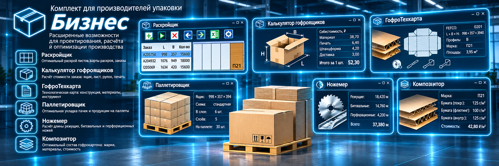
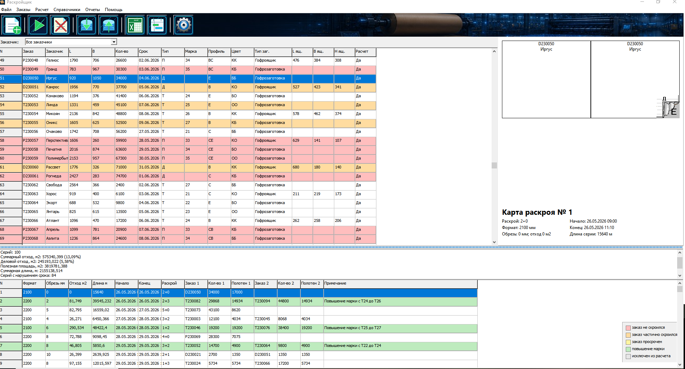
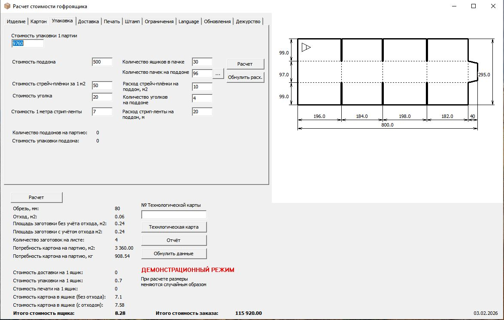
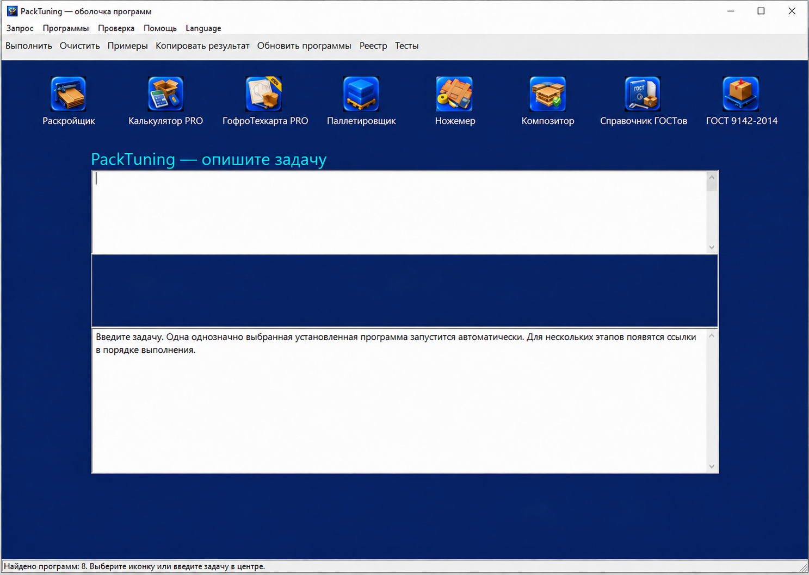

Рассчитать стоимость
Оцените материалы, печать, упаковку и доставку в Калькуляторе.

Для производителей гофроупаковки
Шесть программ для ежедневной работы технолога, экономиста и планировщика: рассчитать стоимость, подготовить конструкцию и техкарту, спланировать раскрой.
Оцените материалы, печать, упаковку и доставку в Калькуляторе.
Выберите конструкцию, задайте размеры и выпустите PDF в ГофроТехкарте.
Соберите заказы и получите карты раскроя и отчёты в Раскройщике.
Подберите схему, число ящиков в слое и количество слоёв в Паллетировщике.
Определите длины ножей, биговки и перфорации, а также стоимость штампа в Ножемере.
Сравните сочетания лайнеров и флютинга по стоимости, массе и расчётной прочности в Композиторе.
В комплекте «Бизнес» Калькулятор и ГофроТехкарта включены в редакциях PRO: они получают параметры заказа из Раскройщика без повторного ввода. Паллетировщик и Ножемер включены в редакциях Standard; возможности, требующие их PRO-редакций, в комплект не входят.

Реальный интерфейс программы · нажмите для увеличенияРасчёт заготовки по внутренним размерам ящика, отображение биговок и обрези.
Планирование с учётом форматов машин, совместимости марок и сортов, сырья и складских остатков.
Импорт заказов и фактических планов из Excel, работа с SQL Server, карты раскроя и отчёты Excel/Word.
Подробнее о программе →
Реальный интерфейс программы · нажмите для увеличенияРасчёт гофроящиков, гофролистов и рулонов с учётом размеров, тиража, материала, обрези и отходов.
Материалы, печать и форма, упаковка партии и доставка. Потребность в картоне в квадратных метрах и килограммах.
Развёртка ящика, вспомогательные схемы, технологическая карта и расчётный отчёт в PDF. Настройки и прайс хранятся в файлах.
Калькулятор PRO: дежурный режим принимает задания из папки, выполняет расчёт и сохраняет отчёт; интеграция получает параметры заказа из Раскройщика.
Подробнее о программе → Реальный интерфейс программы · нажмите для увеличения
Реальный интерфейс программы · нажмите для увеличенияПошаговый мастер: конструкция, размеры, материал, печать, производство и упаковка. Автоматический расчёт развёртки.
Параметрический чертёж с размерами. Надписи, логотипы, изображения и манипуляционные знаки на развёртке.
Чертёж, дизайн и спецификация в одном документе для согласования, печати и передачи в производство.
ГофроТехкарта PRO: автоматическое формирование техкарт из JSON-заданий в дежурном режиме и получение параметров заказа из Раскройщика.
Подробнее о программе → Реальный интерфейс программы · нажмите для увеличения
Реальный интерфейс программы · нажмите для увеличенияПодбор схем укладки гофроящиков, числа ящиков в слое и количества слоёв. Ограничения по высоте и геометрии поддона.
Наглядные схемы укладки и расчёт транспортного пакета. Работа с пачками гофрозаготовок.
Сравнивайте схемы и размеры, чтобы рационально использовать площадь поддона и передать результат в производство.
Подробнее о программе → Реальный интерфейс программы · нажмите для увеличения
Реальный интерфейс программы · нажмите для увеличенияРасчёт режущих ножей, биговки и перфорации по конструкции FEFCO или чертежу DWG/DXF.
Тарифы за метр, постоянные расходы, наценка и число изделий на штампе. Передача рассчитанной стоимости в Калькулятор и ГофроТехкарту.
Назначение слоёв реза, биговки и перфорации, цветной предпросмотр и PDF-отчёт.
Подробнее о программе → Реальный интерфейс программы · нажмите для увеличения
Реальный интерфейс программы · нажмите для увеличенияПоиск сочетаний лайнеров и флютинга для трёхслойного картона с ограничениями по стоимости, массе и расчётной прочности.
Справочник материалов, поставщиков и цен. Сравнение вариантов, графики и Парето-анализ.
Ручной расчёт массы и стоимости для 2, 3, 5 и 7 слоёв, импорт XLSX, экспорт Excel и PDF. СТК — расчётная шкала программы, а не физический ECT.
Подробнее о программе →
Интегратор собирает установленные программы PackTuning в одном окне. Нажмите нужную иконку для запуска или введите задачу и исходные данные в центральное поле, затем нажмите «Выполнить».
Если подходящая установленная программа определена однозначно, она запустится автоматически. Для задачи из нескольких этапов появятся ссылки на программы в порядке выполнения; неоднозначный запрос можно уточнить или выбрать предложенный инструмент вручную.
На иллюстрации показаны Раскройщик, Калькулятор PRO, ГофроТехкарта PRO, Паллетировщик, Ножемер, Композитор, Справочник ГОСТов и расчёт по ГОСТ 9142-2014. Справочник ГОСТов и расчёт по ГОСТ 9142-2014 входят в подарок в любой комплект. Передача параметров зависит от поддержки интеграции и редакции целевой программы.
Размещение заготовок, обрезь, сроки, оборудование и отчёты Excel/Word.
Расход картона и составляющие себестоимости. PDF-отчёт для проверки и согласования.
Размерный чертёж, оформление и спецификация в PDF для производства.
Схема размещения ящиков, количество слоёв и поддонов, высота и масса укладки. Отчёты Word и PDF.
Длины режущих, биговальных и перфорационных ножей, стоимость штампа и цветной чертёж в PDF.
Таблица допустимых вариантов, масса и стоимость картона, расчётный запас прочности, графики и отчёты PDF/Excel.
Программы поставляются со словарями для десяти языков. Для другого языка можно подготовить и подключить собственный словарь.
Актуальные возможности, история изменений и доступные словари публикуются на страницах программ. Проверьте демоверсии на своих задачах перед покупкой комплекта.
Каждая демоверсия скачивается отдельно. Демо Раскройщика создаёт пример заказов и не требует SQL Server; рабочая версия использует SQL Server. Условия и ограничения демоверсий приведены на страницах программ.
Полная версия
Скачать демоверсию ↓PRO
Скачать демоверсию ↓PRO
Скачать демоверсию ↓Standard
Скачать демоверсию ↓Standard
Скачать демоверсию ↓Полная версия
Скачать демоверсию ↓Расширенный комплект для производителей упаковки: шесть программ на одно рабочее место.
Калькулятор PRO и ГофроТехкарта PRO поддерживают интеграции и дежурные режимы. Паллетировщик и Ножемер входят в редакциях Standard.
Бессрочная лицензия · 1 рабочее место
Цена за весь комплект в российских рублях.
Заказать комплектЛицензия привязывается к конкретному компьютеру.
Получите pc-settings-detector.zip по ссылке ниже.
Распакуйте архив и запустите программу на компьютере, для которого покупаете комплект.
Скопируйте показанный программой код.
319 000 ₽ на карту 5536914068135833. Пометка: «Оплата комплекта Производитель — Бизнес». Укажите ИНН для чека.
Напишите на vguberniev@gmail.com: название комплекта, код оборудования и дата транзакции.
После проверки платежа автор пришлёт ссылки на персональные дистрибутивы для указанного компьютера.
Независимый обзор отдельной программы комплекта. Ознакомьтесь с оценкой и возможностями на сайте издания.
Читать обзор →Независимый обзор программы Паллетировщик. Автор обзора — Andrei Verdeanu. Оценка Softpedia: 3,5 из 5.
В обзоре отмечены подбор схем размещения коробок на поддоне, единый интерфейс для расчётных параметров и экспорт результатов в Word и PDF.
Читать полный обзор →Раскройщик, Калькулятор PRO, ГофроТехкарта PRO, Паллетировщик Standard, Ножемер Standard и Композитор. Два инструмента ГОСТ — в подарок.
В комплекте «Бизнес» Калькулятор и ГофроТехкарта включены в редакциях PRO: они получают параметры заказа из Раскройщика без повторного ввода. Паллетировщик и Ножемер включены в редакциях Standard; возможности, требующие их PRO-редакций, в комплект не входят.
Для демо Раскройщика — нет. Рабочая версия Раскройщика хранит данные в SQL Server. Калькулятор сохраняет настройки и справочники в файлах.
Нет. Цена 319 000 ₽ указана за бессрочные лицензии комплекта на одно рабочее место с привязкой к компьютеру.
Да. В разделе «Демоверсии» есть отдельные ссылки на все шесть программ.
Напишите автору: помогу выбрать комплект, уточнить условия лицензирования и подготовить программы для вашего рабочего места.